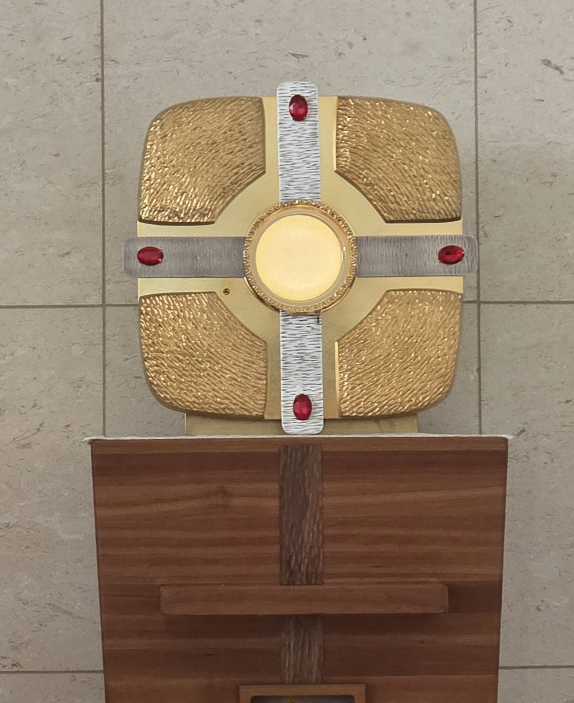

ORIGINAL MODE
오리엔테이션
천천히 시작해 보세요.
나답게 시작하기
나만의 캐릭터 만들기
마음에 드는 모습을 골라 보세요. 정답은 없어요.
우리 성당 감실을 바라보며
예수님과 함께 머무는 시간
성체 안에 계신 예수님께 마음으로 이야기해 보세요.

10초
휴대전화를 세로로 세워주세요
세로 화면에서 게임을 더 편하게 즐길 수 있어요.
원본
게임을 준비하고 있어요…